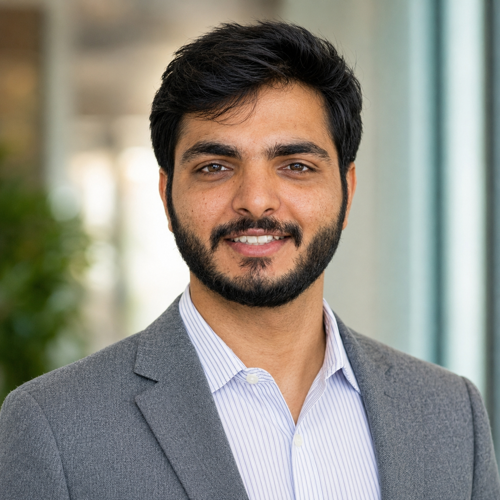

Prince Patel
M.Tech Student in Transportation Systems Engineering
I am an M.Tech student in Transportation Systems Engineering at the Indian Institute of Science (IISc), Bengaluru , and currently work as a Consultant with the Council on Energy, Environment and Water (CEEW) .
My work focuses on sustainable mobility, cyclist safety, public transport, last-mile connectivity, traffic simulation, survey research, and statistical and econometric modelling. I use Python, R, Power BI, QGIS, VISSIM, and Unity to translate mobility data into planning and policy insights.
Biography
I am pursuing an M.Tech in Transportation Systems Engineering at IISc Bengaluru after completing a B.Tech in Civil Engineering from Smt. S.R. Patel Engineering College, Unjha. My academic and professional work combines field surveys, experimental design, transportation modelling, data visualization, and machine learning.
My M.Tech thesis studies cyclists’ perceived safety under varying traffic conditions using a virtual bicycle simulator. The research examines how bicycle-lane provision, traffic speed, and traffic volume influence perceived safety and observed riding behaviour.